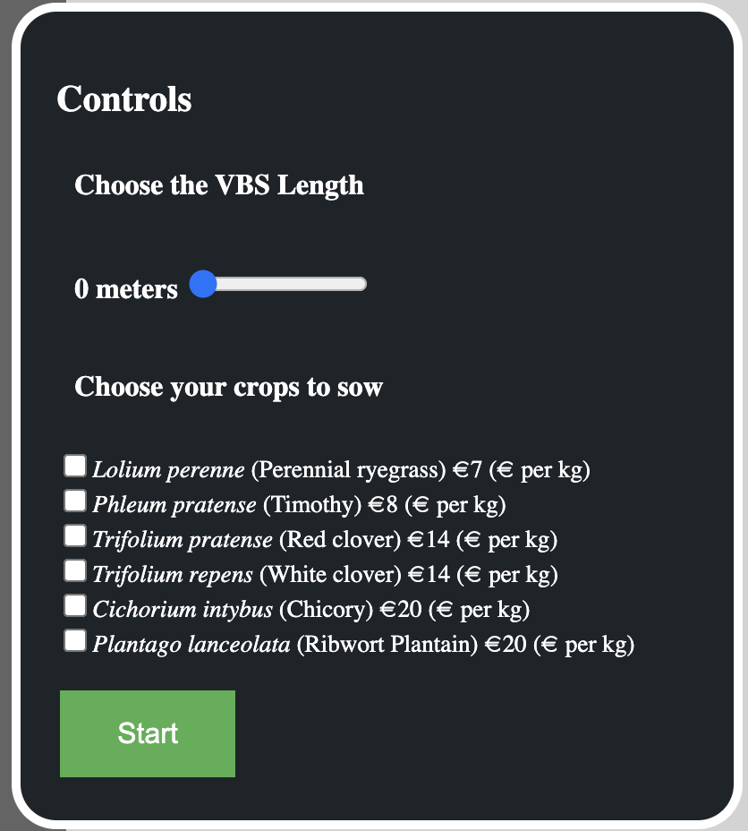
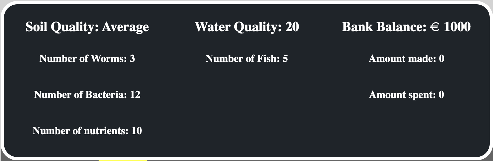
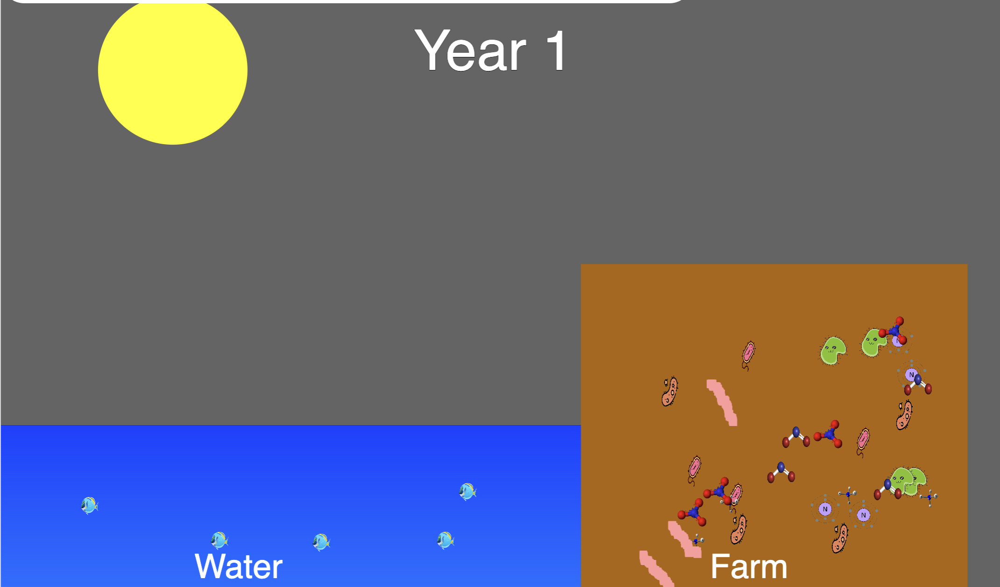

The objective of this microworld is to improve your understanding of the Nitrogen cycle and vegetative buffer strips (VBS). As the farmer in each challenge, you must make decisions at the start of year one regarding the length of the VBS, the VBS plant, and the crops you want to sow using the control panel.
The cost of each crop will be subtracted from your bank balance, and the profit from your yield will be calculated and added at the end of the year and displayed on the Dashboard.
In year two, you will select the crops to sow again. The VBS length and plants will remain unchanged from year one.
At the beginning of each challenge the farm soil level is average, with earthworms, nitrogen in multiple forms, and the bacteria responsible for converting the nitrogen.
In the nitrogen cycle, a sequence of chemical reactions transforms various forms of nitrogen into forms that plants can absorb. The conversion process involves nitrogen-fixing bacteria that converts nitrogen gas to ammonia (NH4+). The resulting ammonia then undergoes transformation into nitrite (NO2-) via another type of bacteria. Subsequently, nitrite is further transformed into nitrate (NO3-), which is a highly plant-accessible form of nitrogen. Ultimately, the nitrogen cycle helps ensure that living organisms have access to the nitrogen they require.
Diagram 1 shows how the Microworld converts nitrogen gas (N2) to ammonia (NH4+). The conversion happens when the Nitrogen-Fixing bacteria eats the nitrogen gas and poops out the ammonia.
Diagram 2 shows how the Microworld converts ammonia (NH4+) to nitrite (NO2-). The conversion happens when the Nitrogen-Fixing bacteria eats the ammonia and poops out the nitrite.
Diagram 3 shows how the Microworld converts nitrite (NO2-) to nitrate (NO3-). The conversion happens when the Nitrogen-Fixing bacteria eats the nitrite and poops out the nitrate.
Diagram 4 shows how to Microworld crops absorb the nutrients and grow